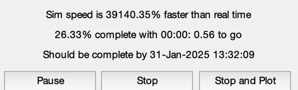
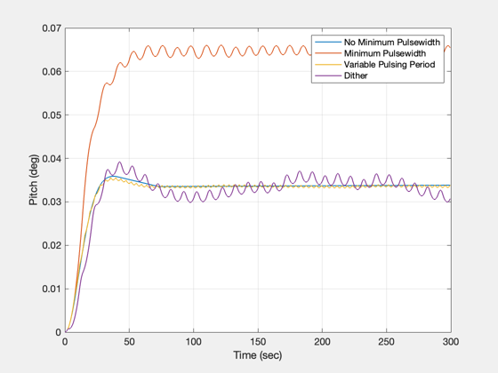
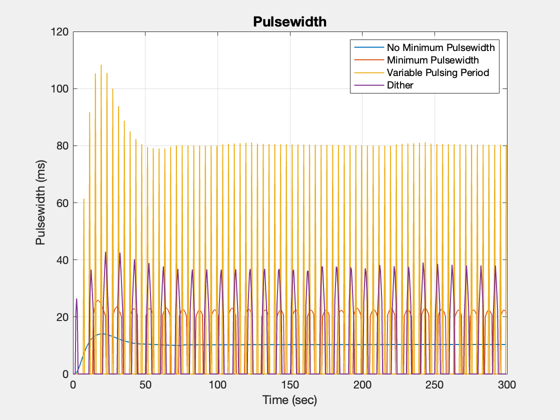

Study pulse resolution.
Demonstrates using a multirate system and dither to reduce the effect of minimum pulsewidths. This script shows the effect of (1) ideal response; (2) minimum pulsewidth, with no other compensation; (3) using a variable pulse period; and (4) the use of dither. The controller is a PD control with no other compensation. The minimum pulsewidth gives a large overshoot since no control is applied until the minimum pulsewidth is exceeded. The dither amplitude needs to be adjusted to get the best response if you change the minimum pulsewidth.
Things to try:
- Change the number of pulses
- Change the magnitude and width of the dither
Since version 2. ------------------------------------------------------------------------- See also C2DZOH, CButter, PDDesign, Series, Plot2D, TimeGUI, TriangleWave -------------------------------------------------------------------------
Contents
%-------------------------------------------------------------------------- % Copyright (c) 1996, 2008, 2015 Princeton Satellite Systems, Inc. % All rights reserved. %--------------------------------------------------------------------------
Global for the TimeGUI
%------------------------ global simulationAction simulationAction = ' ';
Constants
%-----------
degToRad = pi/180;
radToDeg = 180/pi;
System Parameters
Design the dither wave magnitude and width.
%------------------- nSim = 600; inr = 2000*eye(3); dT = 0.5; % This is the loop sampling time (sec) minPw = 20; % milliseconds uTorque = 0.5; % torque for a unit pulsewidth (Nm) nPulse = 8; % number of control periods between thruster pulses mDither = 1.3*minPw; % milliseconds wDither = 30; dither = mDither*TriangleWave(linspace(0,2*pi*wDither,nSim));
Design the control loop
Use a continuous Butterworth Filter with the PD control.
%-------------------------
zeta = 0.7071;
wN = 0.1;
wD = 1.0;
[aC,bC,cC,dC] = PDDesign(zeta,wN,wD,inr(2,2));
[aN,bN,cN,dN] = CButter(2,1);
[aC,bC,cC,dC] = Series(aC,bC,cC,dC,aN,bN,cN,dN);
[aC,bC] = C2DZOH( aC, bC, dT );
Use a double integrator plant
%------------------------------- aP = [0,1;0 0]; % double integrator model of the spacecraft bP = [0;1]/inr(2,2); cP = [1,0]; dP = 0; [aP, bP] = C2DZOH( aP, bP, dT/500);
Simulate the loop
Loop through the simulation four times: first without the effect of the minimum pulsewidth, i.e. the ideal response; second with the minimum pulsewidth; third with a variable pulsewidth; and fourth with the dither. A step input is applied to the system.
%------------------- yPlot = zeros(4,nSim); uPlot = zeros(4,nSim); uStep = 0.01; nPW = 1000*dT; % Initialize the time display %----------------------------- [ ratioRealTime, tToGoMem ] = TimeGUI( nSim, 0, [], 0, dT, 'TPDRes' ); % Loop through four times %------------------------ for j = 1:4 x = zeros(2,1); xC = zeros(3,1); kPulse = 0; for k = 1:nSim % Display the status message %--------------------------- [ ratioRealTime, tToGoMem ] = TimeGUI( nSim, k, tToGoMem, ratioRealTime, dT ); % Compute the control %-------------------- yPlot(j,k) = x(1); uC = cC*xC + dC*x(1); xC = aC*xC + bC*x(1); % Pulsewidth modulation - calculate the pulsewidth in milliseconds % from the ratio of the requested control torque to the unit torque % (that produced by 1 second of firing time) %---------------------- pulsewidth = dT*abs(uC/uTorque)*1000; if( j == 3 ) % variable pulsing period utilizes a counter. kPulse = kPulse + 1; if( kPulse < nPulse ) pulsewidth = 0; else pulsewidth = nPulse*pulsewidth; kPulse = 0; end elseif( j == 4 ) % add the dither signal to the pulsewidth pulsewidth = pulsewidth + dither(k); end % Apply the minimum pulsewidth %----------------------------- if( (j > 1) && (pulsewidth < minPw) ) pulsewidth = 0; end uPlot(j,k) = abs(pulsewidth); % The plant %---------- nPulsewidth = floor(pulsewidth); uCA = [uTorque*sign(uC)*ones(1,nPulsewidth),zeros(1,nPW-nPulsewidth)]; for i = 1:nPW x = aP*x + bP*(uStep - uCA(i)); end % Time control %------------- switch simulationAction case 'pause' pause simulationAction = ' '; case 'stop' return; case 'plot' break; end end end Plot2D((0:(nSim-1))*dT,yPlot*radToDeg,'Time (sec)','Pitch (deg)',' '); legend('No Minimum Pulsewidth',... 'Minimum Pulsewidth',... 'Variable Pulsing Period',... 'Dither'); Plot2D((0:(nSim-1))*dT,uPlot,'Time (sec)','Pulsewidth (ms)','Pulsewidth'); legend('No Minimum Pulsewidth',... 'Minimum Pulsewidth',... 'Variable Pulsing Period',... 'Dither'); %-------------------------------------- % PSS internal file version information %-------------------------------------- % $Date$ % $Id: f21ef6495bd97c4cbe59877892e1defabe12a7f7 $  